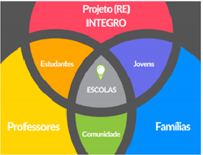
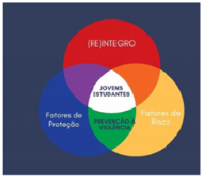

1 Projetos
As atribuições da Ouvidoria Nacional dos Serviços Penais - Onasp - extrapolam as ações de controle, acompanhamento e tratamento de requisições internas e externas, nesse sentido, diversos projetos foram continuados e/ou iniciados no período de referência, sendo: os projetos Ressocializa e (Re) Integro; a Construção do Relatório Digital Unificado de Inspeção Prisional; e o Cadastro Nacional de Participação Social na Execução Penal. Dessa forma, esse capítulo traz informações sobre as projetos e os seus respectivos andamentos.
1.2 Projeto (Re) Integro
O Projeto (Re) Integro - uma perspectiva de participação social na execução penal para a promoção da cidadania e prevenção da criminalidade - é uma iniciativa experimental desenvolvida pela Ouvidoria Nacional dos Serviços Penais do Departamento Penitenciário Nacional, em parceria com a Secretaria de Estado de Educação do Distrito Federal; a Fundação Nacional de Amparo ao Trabalhador Preso e a Organização dos Estados Ibero-Americanos. O projeto surge da necessidade de situar a Execução Penal num campo mais amplo de participação social, com propósito de realçar as possibilidades de atuação da sociedade civil nas políticas penais, consoante o art. 4º da Lei nº 7.210, de 11 de junho de 1984, que determina ao Estado que recorra à cooperação comunitária nas atividades de execução da pena, no sentido de que, é essencial que a sociedade civil entenda os contextos da criminalidade que a envolvem, e compreenda a necessidade de diálogo com a população para redução da criminalidade juvenil - segmento etário de maior representatividade no sistema prisional, e também nas estatísticas de violência e criminalidade. É preciso superar o modelo de promoção da Política Penitenciária, em que se dá visibilidade às mazelas do cárcere e pouco se fala sobre a responsabilidade social nas Políticas Públicas, travando discussões sobre a Execução Penal e a importância da participação da sociedade civil na reintegração social de pessoas presas e egressas. A escassa participação da sociedade civil na Execução Penal e nas questões do cárcere pode reforçar a estigmatização e o preconceito contra as pessoas presas e egressas do sistema prisional, o que pode também contribuir para a reincidência criminal e o reingresso na prisão (AMARAL, 2017) Esse cenário indica possibilidades de espaço de atuação do Departamento Penitenciário Nacional na promoção de ações que possam contribuir com a reintegração social das pessoas presas e egressas do sistema prisional, de forma a potencializar a efetivar os resultados institucionais, combatendo a reincidência. É nessa lacuna de demanda que atua o Projeto (Re) Integro, cujos objetivos são:
estimular a relação de corresponsabilidade entre governos e a sociedade civil sobre a Execução Penal e a construção da Cidadania - dentro e fora das prisões;
promover a participação e o controle social no processo de execução penal;
contribuir para a ressocialização das pessoas em privação de liberdade e egressas do sistema prisional;
prevenir a criminalidade; e
promover os direitos humanos.
O Projeto está organizado em dois eixos principais:
Eixo Formativo - destinado à capacitação da sociedade civil; e
Eixo Revitalização de espaços públicos e trabalho prisional.
Para a implementação do projeto, especialmente no que concerne a busca por adotar formatos que considerem a necessidade de promover políticas públicas por evidências, considerando ainda o seu caráter inovador, as ações do projeto desenvolvidas estão relacionadas à concepção de metodologias, técnicas e processos de planejamento e gestão de atividades fim e meio, no sentido de redução da criminalidade e da violência, por meio de ações integradas de justiça, segurança, cidadania e direitos humanos.
Para tanto, foi elaborado:
Diagnóstico, instrumento essencial para a construção de parâmetros para o projeto, contendo dados da situação socioeconômica, educacional, e de violência e criminalidade das regiões administrativas e das escolas públicas do Distrito Federal;
Proposta de metodologia para acompanhamento e avaliação do Projeto, contemplando indicadores de desempenho e de percepção social;
Proposta de metodologia a ser aplicada na capacitação/formação da comunidade escolar, em específico na formação do corpo docente da Educação Básica para atuar junto aos estudantes, no desenvolvimento dos temas: sociedade, crime e sistema prisional, e na formação dos alunos e familiares sobre os referidos temas;
Portfólio de Projetos Transdisciplinares e compõe o conjunto de atividades voltadas aos discentes da Educação Básica e seus familiares e Curso de Formação Continuada de Docentes em Estratégias Coletivas de Resposta a Desafios Contemporâneos da Juventude , que visa capacitar os docentes para desenvolver as atividades previstas no Portfólio de Projetos Transdisciplinares e manejar as temáticas relativas à segurança pública, ao sistema prisional, à participação social e às questões correlatas, em sala de aula, durante o ano letivo de 2022;
Celebração de parceria com a sociedade civil para a instalação de oficinas de trabalho para emprego e capacitação de mão de obra prisional.
O Projeto (Re) Integro parte da triste realidade, em que, os jovens figuram de forma central nas estatísticas criminais e de violência. Se destaca no contexto da Execução Penal, o fato de que, a população jovem, de 18 a 29 anos, representa 45,47% da população presa (TEMER et al., 2018), enquanto representa apenas 18% da população em geral brasileira (IBGE, 2019), demonstrando que essa faixa etária está sobre representada no sistema prisional, evidências que, juntamente com os dados de violência, demandam ações específicas para intervir nesse contexto.
Para diminuir esses números, é preciso desromantizar o crime e o sistema prisional, estabelecendo canais específicos de diálogo com esse público, intervindo num contexto real em que o crime tem sido vendido como solução para jovens, crianças e adolescente, em especial para os que estão em situação de vulnerabilidade, antes que ingressem nessas estatísticas e no sistema prisional. Assim, o projeto aposta na interface entre educação, juventude, socioeducação sistema penal e participação social
Nesse sentido, para o projeto (RE) Integro, os atores desta interação com as juventudes são justamente aqueles que compõem a vida escolar, professores (as), diretores (as), familiares e demais profissionais que atuam na escola e com a escola, apostando nos jovens estudantes da educação básica como os sujeitos sociais centrais da proposta, encontrando na escola o lócus privilegiado de suas ações, seja na escola regular, tal como a conhecemos, como também aquelas que estão no interior das instituições de restrição de liberdade como os centros socioeducativos e as prisões (CARUSO, 2020). A Figura 1.1 esquematiza os atores institucionais envolvidos no processo.

O projeto ancora-se, numa estratégia de prevenção social ampla: a) primária destinada aos jovens estudantes das escolas públicas selecionadas com base em diagnósticos situacionais realizados; e b) secundária e terciária, visto que também objetiva-se contemplar jovens que estejam cumprindo medidas socioeducativas de natureza leve e que, por essa razão, acessam a escola regular, assim como aqueles que estão em cumprimento de medidas restritivas de liberdade, mas que acessam a escola existente no interior das instituições de socioeducação (até 18 anos) e nas Unidades Prisionais (entre 18 e 29 anos).
Destaca-se que o projeto (Re) Integro fundamenta-se em diagnóstico sobre a realidade da população juvenil, no contexto territorial e social em que for implementado, a fim de extrair da própria realidade vivida os subsídios temáticos a serem explorados no curso que passa a funcionar como catalisador de diversas ações que poderão ser desenvolvidas no ambiente escolar (CARUSO, 2020), especialmente considerando que o Brasil é o país com a maior população jovem da América Latina, e tendo em vista que tal juventude vem sendo afetada pelas dinâmicas de violência acima apontadas, o eixo formativo está desenhado para abordar: dinâmicas da criminalidade violenta entre jovens, fatores que influenciam no uso de armas de fogo entre jovens e adolescentes, encarceramento no Brasil e perfil da população presa, fazendo interlocução com a prevenção social, os fatores de risco e de proteção, e com o conteúdo de cidadania, participação social e corresponsabilidade na Segurança Pública.

As juventudes em suas dimensões etárias e identitárias são a prioridade do projeto, entretanto, é necessário distinguir as temporalidades e as trajetórias de vida que podem marcar cada segmento, considerando os critérios de idade X permanência na escola.
Nesse sentido, além dos docentes, que serão formados para o manejo dos temas afetos a execução penal, o público alvo do projeto contempla os alunos da rede de Educação Básica, considerando o recorte de juventudes em dois tempos:
Primeiro tempo: Adolescentes e Jovens entre 13 e 19 anos, contemplando alunos regulamente matriculados nos anos finais do ensino fundamental II e nos três anos do Ensino Médio. Para este público-alvo do projeto considera-se duas dimensões que se conectam: Adolescentes/jovens em atividade escolar, tanto na educação básica regular (anos finais do Ensino Fundamental e Ensino Médio); quanto na Educação de Jovens e Adultos (EJA) ou na Educação de Adolescentes em cumprimento de medida socioeducativa;
Segundo tempo: Jovens entre 18 e 29 anos, contemplando jovens entre 18 e 29 anos que estão cumprindo medidas restritivas de liberdade no regime fechado e que estejam regularmente matriculados em escolas no interior do Sistema Penitenciário.
Essa distinção é fundamental para o projeto (RE) Integro, uma ação que se pretende concreta de prevenção social à violência, considerando a necessidade de articular atores e instituições em torno das discussões que permeiam o sistema prisional e, portanto, as dinâmicas que o envolvem, mormente as relacionadas ao contexto de violência e criminalidade.
1.2.1 Eixo Formativo - Destinado à capacitação da sociedade civil
Para subsidiar a execução do projeto, por meio de parâmetros científicos, na fase inicial de implementação, compreendendo o período de 2020 até meados de 2022, foram entregues os sete primeiros resultados, voltados à construção metodológica e de governança a ser aplicada, bem como a instrumentalização das oficinas de trabalho do eixo II. Após a fase inicial, em sua atual fase de implementação - meados de 2022 até março de 2023, foram entregues os resultados de desenvolvimento e aplicação do Eixo I. Os resultados se consolidaram, nas seguintes entregas:
Diagnóstico, instrumento essencial para a construção de parâmetros para o projeto, substanciado em duas entregas: Documento técnico (NAHAS, 2021a), contendo dados da situação socioeconômica, educacional, e de violência e criminalidade das regiões administrativas e das escolas públicas do Distrito Federal; e Documento técnico contendo a análise dos resultados quantitativos levantados, apresentando conjunto de recomendações sobre as áreas escolares identificadas como prioritárias para implementação das ações (NAHAS, 2021b);
Construção de marcos metodológicos e conceituais que permeiam toda a identidade do Projeto (Re)Integro (CARUSO, 2021). Para isto, verificou-se as principais dimensões do debate teórico-metodológico da relação entre juventude-educação-violência, a partir de conceitos teóricos, dados sobre a realidade nacional e dos dados inferidos no diagnóstico.
Metodologia (SILVA, 2021a) a ser aplicada na capacitação/formação da comunidade escolar, em específico na formação do corpo docente da Educação Básica para atuar junto aos estudantes, no desenvolvimento dos temas: sociedade, crime e sistema prisional;
Programa de ações pertinentes à aplicação da metodologia definida - denominada “Portfólio de Projetos Transdisciplinares”. O programa compõe o conjunto de atividades voltadas aos discentes da Educação Básica e seus familiares (SILVA, 2021b);
“Curso de Formação Continuada de Docentes em Estratégias Coletivas de Resposta a Desafios Contemporâneos da Juventude” (SILVA, 2021c), que visa capacitar os docentes para desenvolver as atividades previstas no Portfólio de Projetos Transdisciplinares e manejar as temáticas relativas à segurança pública, ao sistema prisional, à participação social e às questões correlatas, em sala de aula, durante o ano letivo de 2022 e 2023. O programa do curso apresenta: análise contextual, com definição de público-alvo; importância do projeto para o fortalecimento do sistema prisional, contexto de desenvolvimento da capacitação (incluindo a metodologia adotada); resultados esperados; roteiro de atividades pedagógicas (descrição do conteúdo do curso, de forma esquemática e objetiva) e planejamento metodológico, com desenho institucional; e proposta de atividades, numa perspectiva de prevenção à criminalidade e de participação social na Política de Segurança Pública.
Projeto pedagógico, com cartilhas voltadas a instrução de docentes e discentes que compõe o projeto (caderno aluno e caderno do professor);
Metodologia para acompanhamento e avaliação do Projeto, contemplando indicadores de desempenho e de percepção social (GUELLATI, 2021);
Realização do “Curso de Formação Continuada de Docentes em Estratégias Coletivas de Resposta a Desafios Contemporâneos da Juventude” - em formato pré-teste, oportunidade em que foi possível formar 12 docentes da rede pública e privada do Distrito Federal, a fim de identificar, possível oportunidades de aperfeiçoamento da ação de desenvolvimento.
Processo seletivo para contratação de oito consultorias destinadas à desenvolver e analisar as ações do Eixo I e do Eixo II do Projeto e contratação dos consultores pelo Prodoc OIE/BRA;
Realização do “Curso de Formação Continuada de Docentes em Estratégias Coletivas de Resposta a Desafios Contemporâneos da Juventude” em fase um em novembro de 2022, com atividades síncronas e assíncronas, oportunidade em que foram formados 76 docentes de escolares regulares e não regulares do Distrito Federal;
Realização da Oficina Pedagógica em fevereiro e março de 2023 com atividades presenciais práticas do Curso de Formação, realizado com os professores aprovados no Curso, ocorrido em novembro de 2022.
1.2.2 Eixo de Revitalização de Espaços Públicos e Trabalho Prisional
Destacam-se as seguintes entregas realizadas desde a celebração do Termo de Colaboração até março de 2023:
A Casa (Re)Integro foi instalada em Samambaia para a realização das oficinas. Nesse sentido, as oficinas e capacitações foram instaladas em dois imóveis em Samambaia, DF:
Espaço para produção e capacitação profissional (Sede): localizado na QS 404, Conjunto C, Lote 7, Samambaia Norte, CEP 72.318-550, onde está instalada a gráfica, o almoxarifado e a oficina de trabalho (serralheria e marcenaria);
Espaço destinado a capacitação profissional: localizado na Quadra QS 304, Conjunto 2, Lote 2, sobre loja, Samambaia Sul, CEP 72.306-502, onde foram executadas as capacitações profissionais das pessoas presas (Aulas de empreendedorismo e oficinas de qualificação) até dezembro de 2022;
A Oficina de sustentabilidade e divulgação institucional possui uma lista ampla de produtos gráficos (20451374), que hoje realiza entregas de qualidade na área de produções gráficas, absolvendo a demanda interna do órgão, por meio do incentivo ao trabalho de pessoas em privação de liberdade, conforme fluxograma para demandas solicitadas pela Senappen. Em 2022 foram produzidos material gráfico pela oficina de sustentabilidade e divulgação institucional para 5 eventos do Depen (atual SENAPPEN) e 3 eventos da Senappen em 2023, conforme portfólio de produtos (documento !SEI 22039864).;
Materiais para realização das Oficinas (documento !SEI 22039873);
Para a Oficina de sustentabilidade e divulgação institucional, foram adquiridos 29 itens no mês de julho de 2022;
No mês de agosto de 2022, para a Oficina de sustentabilidade e divulgação institucional, foram adquirido outros 5 materiais, totalizando 35 itens, dos 38 previstos no Plano de Trabalho;
Foram ainda adquiridos materiais para as Oficinas de Revitalização de Espaços Públicos, como serras, lixadeira e furadeira, conforme Relatório anexo (documento !SEI 20476057);
Atualmente, o projeto, inclusive, vem trazendo frutos na comunidade local;
46 trabalhadores pessoas presas foram contratados, com intermediação da FUNAP/DF (fluxograma para Processo Seletivo de trabalho prisional - 20450623), para realização das oficinas;
A contratação de professores oficineiros para capacitar as pessoas em privação de liberdade em atividades de gráfica, jardinagem, serviços administrativos gerais, dentre outros (fluxograma para Processo Seletivo de oficineiros - 20450762);
Realização de Capacitação e formação profissional para 46 pessoas em privação de liberdade;
Dentre as atividades realizadas, destacam-se as seguintes: Marcenaria Criativa; Plantio de árvores; Confecção de vasos para plantas; Customização de moveis antigos; Pintura de parede Projeto de vida Eletricidade básica Instalação de cerâmica e Serralheria. Além dessas atividades de cunho formativo, são realizadas ações de interação com a comunidade local, auxiliando os moradores e comerciantes com pequenos reparos em suas residências e lojas, e doação de alimentos para pessoas carentes, adquiridas por meio de uma parceria com a feira do produtor de Ceilândia;
A Implantação de oficina de revitalização de espaços públicos;
Revitalização da Escola CEF 619 em Samambaia com a realização de capinagem, construções de canteiro para horta e de espaço para plantio de temperos e chás;
Revitalização da escola CEF 3 de Brazlândia com a realização de jardinagem de dois canteiros localizados em frente ao portão dos alunos;
Revitalização do PROEM com a criação de espaço de convivência dos alunos. Para isto, foi feito pintura das paredes e do chão, inclusão de prateleiras de madeira, modificação das lâmpadas antigas para lâmpadas de led, inclusão de almofadas (costuradas pelos contratados do Projeto) e de tapete;
Revitalização do CEF 10 de Ceilândia com a jardinagem em canteiro localizado em frente à escola, por meio da limpeza do local, remoção de plantas, inclusão de grama e planta rasteira;
Revitalização do CED 104 do Recanto das Emas a partir da limpeza, pintura e preparação dos canteiros para plantas, inclusão das plantas nos canteiros, lixamento e pintura das paredes e de parte do chão destinada ao bicicletário, inclusão de bicicletário (sondado e elaborado na Casa (Re)Integro) e arte em grafitti;
Início da revitalização na UNISS para criação de espaço de convivência no pátio;
Considerando a natureza de seus objetivos e metas, esta ouvidoria informa que o acompanhamento dos projetos Ressocializa e (Re)integro, a partir de janeiro de 2023, passam a ter seu monitoramento pela Diretoria de Políticas Penitenciárias.
1.3 Formulário de Inspeção Prisional (FIP)
A partir da ideia de simplificar, padronizar, modernizar, informatizar e universalizar as informações das inspeções em unidades penitenciárias - realizadas pelos órgãos da execução penal em âmbito nacional - foi apresentada a proposta de criação de um novo formulário de Inspeção prisional na 454ª reunião ordinária do Conselho Nacional de Política Criminal e Penitenciária (CNPCP).
A iniciativa partiu da Ouvidoria Nacional dos Serviços Penais (Onasp) apoiada pelo Conselho Nacional de Política Criminal e Penitenciária (CNPCP), Conselho Nacional do Ministério Público (CNMP), Defensoria Pública da União (DPU) e Conselho de Defensores Gerais (Condege). Nesse sentido, foi instituído um grupo de trabalho (GT) para elaboração de um questionário contendo itens importantes à inspeção prisional. A primeira reunião do GT ocorreu em janeiro de 2020.
A metodologia de trabalho empregada na elaboração do FIP partiu da ideia de simplificação e atualização de outros formulários já existentes e utilizados por outros órgãos da execução penal, sendo: formulário padronizado de inspeções elaborado nos termos do Acordo de Cooperação nº 17/2011 1; questionários adotados pelo Conselho Nacional do Ministério Público; e daquele proposto pelo Escritório das Nações Unidas sobre Drogas e Crime (UNODC), com base nas Regras de Mandela 2.
O produto deste trabalho apresenta as seguintes características:
Questionário com itens padronizados: aproximadamente, 500 (quinhentas) questões que envolvem a aferição de atendimento às diferentes políticas públicas e assistências previstas na Lei de Execução Penal de modo a viabilizar a produção de estatísticas. Diversos itens do questionário tiveram a sua redação atualizada, preferindo-se respostas objetivas à disponibilização de campos abertos, a fim de viabilizar a inserção das informações em bancos de dados que permitirão a extração de estatísticas e metadados importantes para que as inspeções de estabelecimentos penais contribuam com o diagnóstico das deficiências e com a orientação correta das políticas públicas voltadas para o sistema, sem prejuízo de que as equipes de inspeções teçam considerações em formato discursivo à parte;
Foco na avaliação da qualidade dos serviços prestados nas assistências aos presos: prioridade sobre a adequação dos espaços físicos, destinados à prestação de assistências, às diretrizes arquitetônicas, considerando a diversidade dos mais de 1500 estabelecimentos penais brasileiros, e a flexibilização das Diretrizes Básicas para a arquitetura penal, do CNPCP;
Preocupação com a discriminação e tratamento privilegiado de grupos de internos nas unidades: foram incluídos e adaptados itens do formulário especificamente com vistas à identificação da possível prática de condutas discriminatórias ou de tratamento privilegiado contra ou a favor de determinados grupos de internos que são, usualmente, alocados em alas distintas dos estabelecimentos penais, tais como a população LGBTQIA+, presos adeptos de religiões, membros ou ex-integrantes de forças de segurança, entre outros;
Aprofundamento da pesquisa sobre o respeito aos direitos da população LGBTQIA+ em situação de prisão: o GT contou com a colaboração do Grupo de Trabalho de Pessoas LGBTQIA+, da Defensoria Pública da União, que apresentou substancial contribuição para que o formulário possa mapear mais detalhadamente a violação de direitos desse grupo de internos;
Inclusão de pesquisa sobre a remição de pena: o formulário produzido pelo GT contempla a preocupação com o fornecimento da documentação necessária para obtenção do direito à remição de pena, matéria que não constava dos formulários de inspeção anteriormente utilizados.
O trabalho foi planejado em quatro etapas/fases, conforme quadro abaixo.
A primeira etapa foi realizada pelo grupo de trabalho e consistiu em unir as necessidades dos órgãos envolvidos para simplificar, padronizar e universalizar os dados coletados. Dessa forma, o FIP funcionará, também, como uma metodologia de apoio às inspeções prisionais. Essa fase foi concluída em novembro de 2020 com a aprovação, por unanimidade, do referido questionário pelo plenário do CNPCP em sua 454° reunião ordinária. Cabe salientar que, imediatamente após a aprovação do formulário, iniciou-se a utilização do mesmo pela Ouvidoria Nacional dos Serviços Penais (Onasp) e Defensoria Pública da União (DPU) em meios físicos.
A segunda fase consiste na digitalização do formulário. Essa etapa está sob responsabilidade da Senappen - por meio de sua Ouvidoria e Diretoria de Inteligência - com o apoio da Diretoria de Tecnologia da Informação e Comunicação do Ministério da Justiça e Segurança Pública (MJSP). O Sistema de Informação do Departamento Penitenciário Nacional (Sisdepen) foi a plataforma digital escolhida para implementação do FIP, pois possibilita o compartilhamento de informações entre o Levantamento Nacional de Informações Penitenciárias (Infopen) e o novo Formulário de Inspeção Prisional (FIP), além de, melhorar a publicidade e a rapidez no compartilhamento das informações.
O terceiro momento de implantação do FIP será o treinamento aos usuários inspetores interessados na utilização do formulário em sua versão digital. Essa etapa tem como a segunda fase como pré-requisito, porém está em fase de definição de metodologia pela Onasp com previsão de término em 2023. Inicialmente, em 2021, houve tentativa de parceria com o Ministério da Mulher, Família e Direitos Humanos (MMFDH) para elaboração de treinamento on-line voltado aos procedimentos para inspeções prisionais e utilização do FIP, porém, essa ação tornou-se inviável em 2022. Com essa ação, objetiva-se: Capacitar os inspetores para o cadastro e utilização do FIP e Sisdepen; sanar dúvidas a respeito da dinâmica do FIP; publicizar o nova ferramenta; e incentivar o seu uso.
Por fim, a quarta etapa de implantação do Formulário de Inspeção Prisional é a elaboração de uma plataforma de Business intelligence. Alinhado a ideia de transparência das informações públicas, esse painel digital possibilitará a consulta, por qualquer cidadão, das informações não sigilosas das inspeções prisionais em âmbito nacional, além disso, conterá análises estatísticas das inspeções com possibilidade de filtragem por unidades federativas e/ou regiões do país.
1.4 Cadastro Nacional de Participação Social na Execução Penal - Senappen/MJSP
A necessidade de fortalecer a participação social na Execução Penal brasileira, possibilitando a realização de parcerias com Organizações da Sociedade Civil (OSCs), por meio dos instrumentos estabelecidos pela Lei 13.019/2014 e efetividade dos requisitos elencados no art. 3ºB da Lei Complementar nº 79/1994, impulsionou a formalização do Termo de Execução Descentralizada nº 02, em dezembro de 2019, entre o Departamento Penitenciário Nacional (Depen) e o Instituto de Pesquisa Econômica Aplicada (Ipea).
O instrumento de pactuação tem por objeto o desenvolvimento de funcionalidades específicas no Mapa das Organizações da Sociedade Civil (Mapa das OSCs), com vistas à criação do Cadastro Nacional de Participação Social na Execução Penal, integrando plataformas virtuais, emissão de certificação de cadastro e a execução de uma agenda de pesquisas voltada para a identificação e o mapeamento de organizações da sociedade civil que desenvolvem ações ou projetos em temas ligados ao sistema prisional em todo o território nacional.
A parceria com o Ipea se mostrou a mais indicada, uma vez que o instituto é responsável pelo Mapa das Organizações da Sociedade Civil, plataforma pública de dados sobre as OSCs em atividade no país, evitando a sobreposição de ações e contribuindo para o reconhecimento da rede já existente, criada a partir do decreto n° 8.726/2016, que regulamenta a Lei 13.019/2014 – conhecida como Marco Regulatório das OSCs.
O recorte para a execução penal, tem como propósito materializar as disposições do art. 4º da Lei de Execuções Penais (Lei n° 7.210/84). “O Estado deverá recorrer à cooperação da comunidade nas atividades de execução da pena e da medida de segurança”.
Com base neste dever, surge a compreensão de que o enfrentamento das problemáticas vivenciadas pelo sistema prisional brasileiro, demanda atuações coletivas e intersetoriais, com tecnologias sociais inovadoras que propiciem cada vez mais o envolvimento da sociedade civil no processo de execução da pena e na reintegração social de pessoas em privação de liberdade e egressas do sistema prisional.
O primeiro produto da pactuação foi formalizado em 21 de fevereiro de 2020, com a publicação da Portaria nº 120, que institui o Cadastro Nacional de Participação Social na Execução Penal do Departamento Penitenciário Nacional, permitindo a realização do projeto “Ressocializa”, apresentado em tópico próprio deste relatório.
Ainda como produto da parceria estabelecida com o Ipea, está em andamento, a pesquisa “As OSCs no universo do sistema prisional brasileiro” com o objetivo de identificar com maior clareza as organizações da sociedade civil que desenvolvem ações ou projetos em temas ligados ao sistema prisional brasileiro ou que tenham como público pessoas privadas de liberdades, suas famílias e egressos do sistema prisional.
A investigação qualitativa em curso, quando concluída, possibilitará dados avaliatórios para o desenvolvimento de ações e projetos de mútua colaboração, que propiciem um maior envolvimento da sociedade civil no processo de execução da pena e na reintegração social de pessoas em privação de liberdade e egressas do sistema prisional.
Referências
AMARAL, C. DO P. Função da Pena e Invisibilidade. Org: Fernando Fidalgo e Nara Fidalgo. [s.l.] Belo Horizonte: Editora UFMG, 2017.
CARUSO, H. Documento técnico de análise e avaliação do Projeto Parcial. [s.l.] Departamento Penitenciário Nacional - DEPEN, 2020.
CARUSO, H. Consultoria 4 do Projeto OEI/BRA/14/002 – Inovação da Gestão no Ministério da Justiça II. Termo de Referência nº 6692 – Edital nº 051/2020. [s.l.] Departamento Penitenciário Nacional - DEPEN, 2021.
GUELLATI, Y. Projeto OEI/BRA/14/002 – Inovação da Gestão no Ministério da Justiça II - Metodologia para acompanhamento e avaliação do Projeto. [s.l.] Departamento Penitenciário Nacional - DEPEN, 2021.
IBGE. Pesquisa nacional por amostra de domicı́lios Contínua. [s.l.] Instituto Brasileiro de Geografia e Estatística - IBGE, 2019.
NAHAS, A. K. Produto 1 da Consultoria 1 do Projeto OEI/BRA/14/002 – Inovação da Gestão no Ministério da Justiça II. Termo de Referência nº 6692 – Edital nº 051/2020. [s.l.] Departamento Penitenciário Nacional - DEPEN, a2021.
NAHAS, A. K. Produto 2 da Consultoria 1 do Projeto OEI/BRA/14/002 – Inovação da Gestão no Ministério da Justiça II. Termo de Referência nº 6692 – Edital nº 051/2020. [s.l.] Departamento Penitenciário Nacional - DEPEN, b2021.
SILVA, J. Curso de Formação em Estratégias Coletivas de Resposta a Desafios Contemporâneos da Juventude Brasileira. In: Produto 2B da Consultoria 2: Projeto OEI/BRA/14/002. [s.l.] Departamento Penitenciário Nacional - DEPEN, c2021.
SILVA, J. Produto 2A da Consultoria 2: Projeto OEI/BRA/14/002 – Inovação da Gestão no Ministério da Justiça II. Termo de Referência nº 6692 para contratação de pessoa física. Documento nº 16144198. ed. Sistema Eletrônico de Informações: Processo nº 08016.005467/2021-11. [s.l.] Departamento Penitenciário Nacional - DEPEN, b2021.
SILVA, J. Curso de Formação em Estratégias Coletivas de Resposta a Desafios Contemporâneos da Juventude Brasileira. In: Produto 1 da Consultoria 2: Projeto OEI/BRA/14/002 – Inovação da Gestão no Ministério da Justiça II. Termo de Referência nº 6692 para contratação de pessoa física. [s.l.] Departamento Penitenciário Nacional - DEPEN, a2021.
TEMER, M. et al. Lei n 13.675, de 11 de junho de 2018. [s.l.] Diário Oficial da União, Seção 1, p. 4-8, 2018.
Firmado em 23 de novembro de 2011, entre o Senado Federal, a Câmara dos Deputados, o Conselho Nacional de Justiça, o Conselho Nacional do Ministério Público e o Conselho Nacional de Defensores Públicos Gerais.↩︎
Assessing compliance with the Nelson Mandela Rules – A checklist for internal inspection mechanisms↩︎